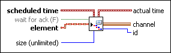

Requires: Base Development System
Writes an element to a Messenger channel at a scheduled time. The endpoint waits until the scheduled time and continues waiting if the channel is full at the scheduled time.
You can drop this endpoint on the block diagram by right-clicking a terminal or a wire and selecting Create»Channel Writer»Messenger»Write Scheduled.
